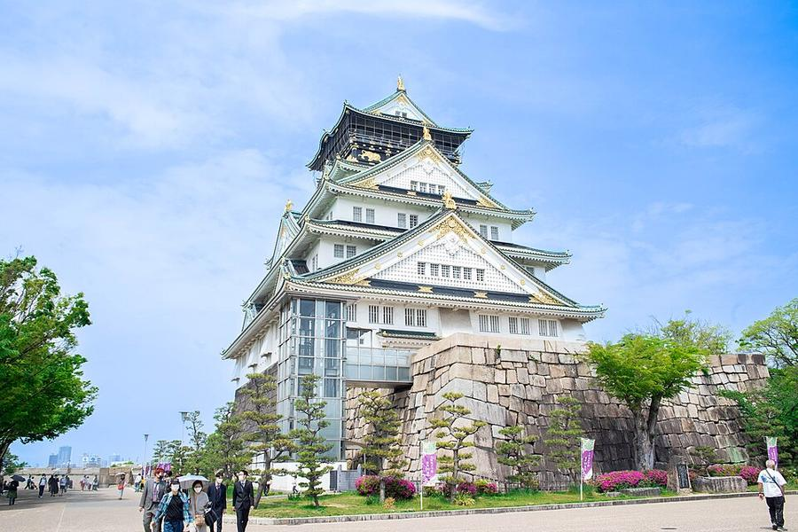
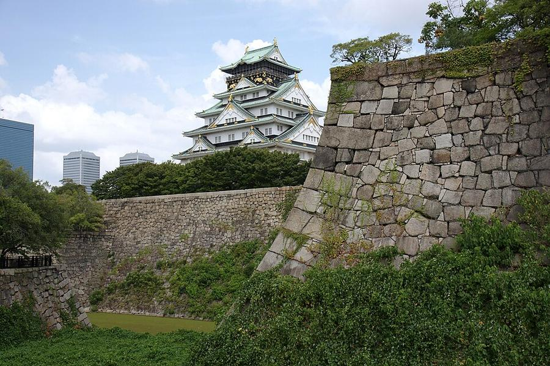
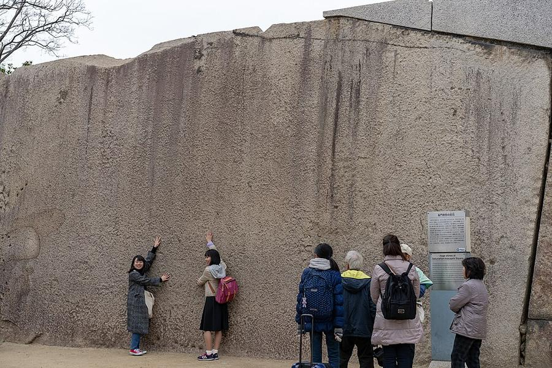
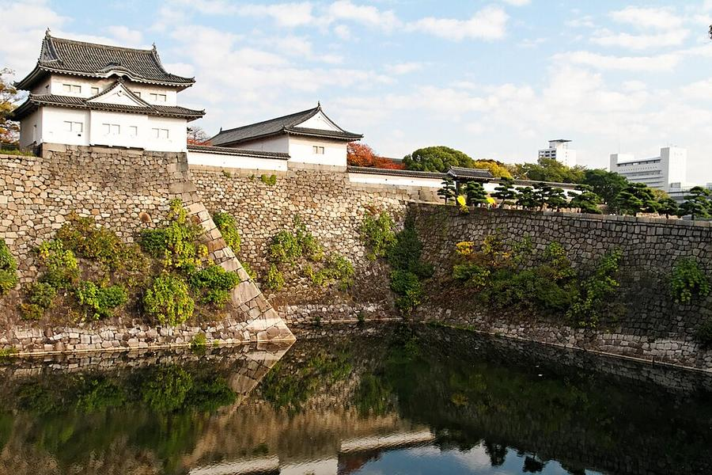
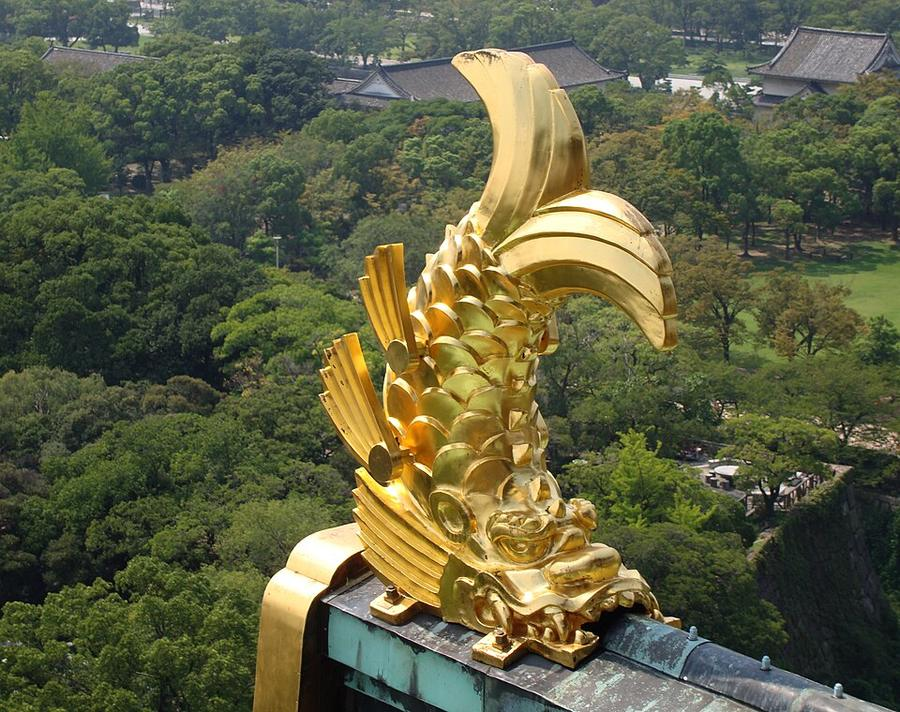
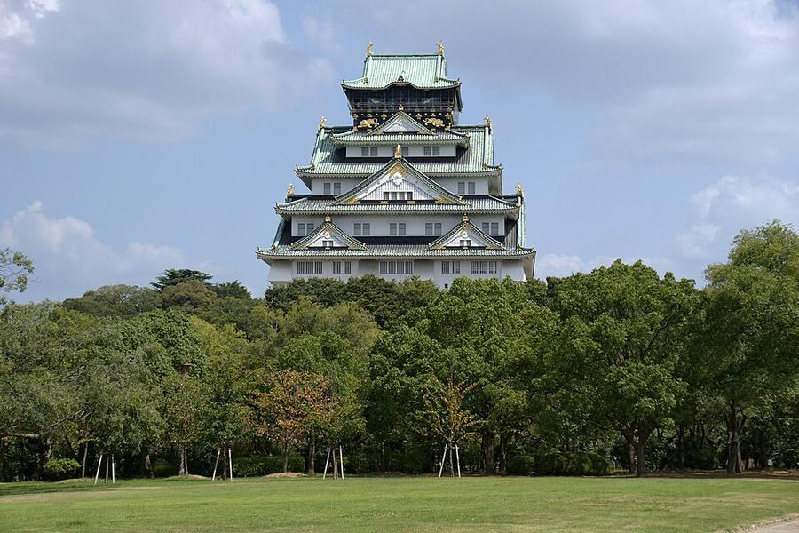
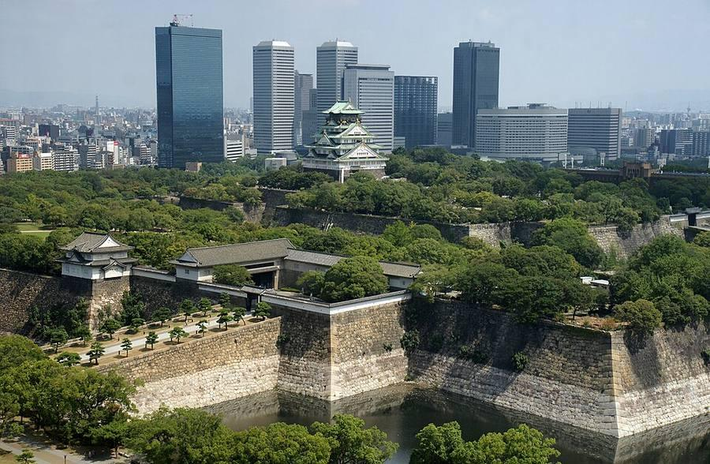

5Замок Osaka и сад Nishinomaru







Первый замок построил Toyotomi Hideyoshi в 1583-1598 годах. После его падения в 1615 году Tokugawa в 1620-1629 годах отстроили замок заново: стены и рвы, которые видно сегодня, - именно этого времени, замок Hideyoshi в основном под землёй. Башня Tokugawa сгорела от молнии в 1665 году. Нынешняя башня - 1931 год, построена на пожертвования горожан, внутри музей, на 8 этаже смотровая (50 м). 16.10.2026 её рекомендовали в важные культурные ценности страны.
Самое подлинное здесь - камни: у ворот Sakuramon лежит Tako-ishi, самый большой камень замка, до ~130 т; стены главной цитадели до ~32 м от дна рва. А башни Sengan-yagura и Inui-yagura (1620) - самые старые постройки замка. Внутрь Sengan и Tamon пускают только по выходным - 24 и 25.10 как раз можно.
Порядок: ворота Otemon и башни Sengan/Tamon внутри → сад Nishinomaru (газон, лучший вид на главную башню) → ворота Sakuramon и Tako-ishi → главная башня.
| Часы | Главная башня 9:00-18:00, вход до 17:30. Сад Nishinomaru 9:00-17:00, вход до 16:30. Башни Sengan и Tamon внутри: сб-вс 10:00-16:30, вход до 16:00, билеты до 15:30 |
|---|---|
| Вход | башня 1 200 ¥; сад 300 ¥; башни Sengan/Tamon вместе с садом 900 ¥ |
| Выходные | сад Nishinomaru - по понедельникам (26.10 закрыт) |
| Наши даты | 24-25.10 открыто всё; в башне выставка об эпохе Sengoku, впервые показывают недавно найденное письмо Hideyoshi (входит в билет) |
| На месте | 2-2,5 ч |
| Дождь | ⛅ часть под крышей, в дождь - частично |
Источник часов и цен: osakacastle.net, osakacastlepark.jp (офиц.); факты о камнях - ja.wikipedia
Как добраться от отеля
- Метро Tanimachi до Tanimachi 4-chome (6 мин, как к музею истории) + 6 мин пешком до ворот Otemon.
- Или JR Osaka Loop Line (оранжевая) от станции Osaka, платформа 2, на Kyobashi/Tsuruhashi: Temma → Sakuranomiya → Kyobashi → Osakajokoen, 10 мин; от станции ~20 мин через парк.
Видео


.jpg){kind=link}

.jpg){kind=link}

.jpg){kind=link}


Рядом


Фото: Wikimedia Commons, автор и лицензия под каждым. Поезда: Yahoo!乗換案内 на 24-26.10.2026, пешие отрезки: OSRM. Часы и цены проверены 25.10.2026 12:49 JST. ← ко всем местам